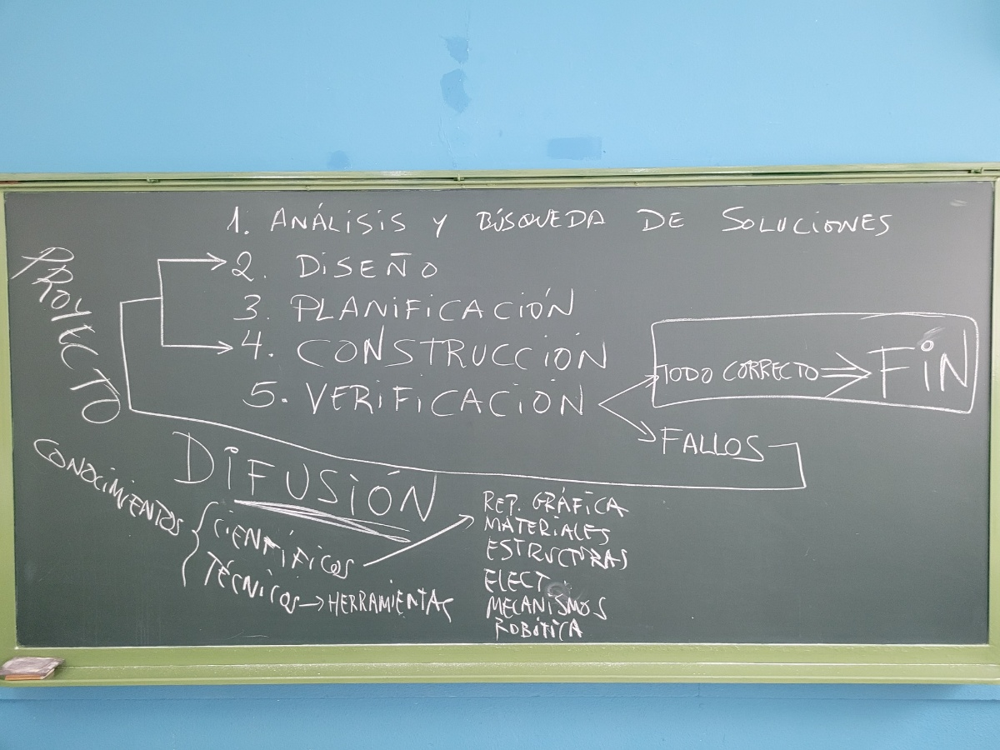

Evaluación Inicial TyD 2º ESO
EVALUACIÓN INICIAL TyD 2º ESO
Nos situamos
Hola hola!
En la imagen de arriba tienes un esquema del funcionamiento de esta asignatura que te dispones a descubrir, incluyendo las fases del proceso tecnológico, que es el orden lógico que seguiremos para alcanzar nuestro objetivo final: Construir nuestro proyecto. Pero lo verdaderamente interesante está por el camino, pues es donde aprenderemos todo lo necesario para convertirnos en auténticos "INVENTORES".
En estas primeras tareas nos daremos cuenta de en qué nivel estamos y, a partir de ahí, empezar a dar pasos seguros hacia el éxito.
Se propondrán una serie de tareas de Evaluación inicial y la creación de un Diario de Aprendizaje.
Comienza la aventura. Allá vamos!
Objetivos de Aprendizaje
- Evaluación inicial del alumnado.
- Creación de la carpeta Diario de Aprendizaje y de la primera ficha.
Obra publicada con Licencia Creative Commons Reconocimiento Compartir igual 4.0